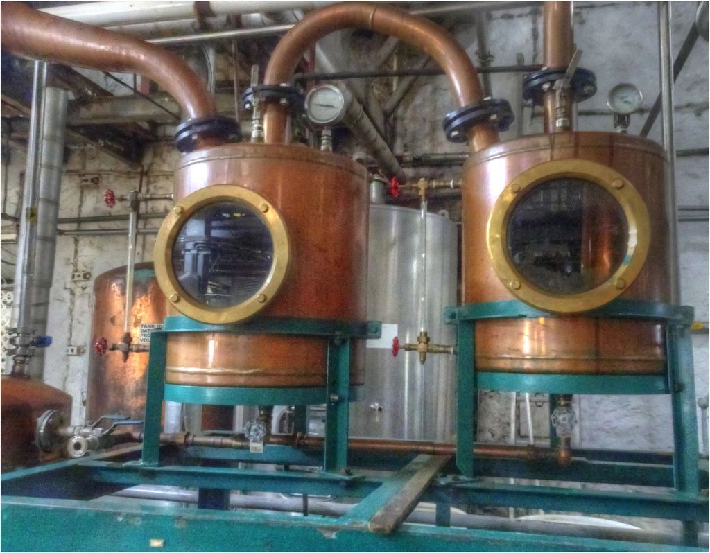
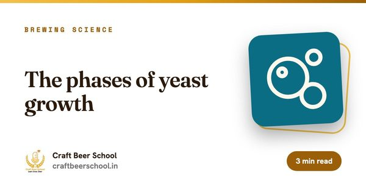
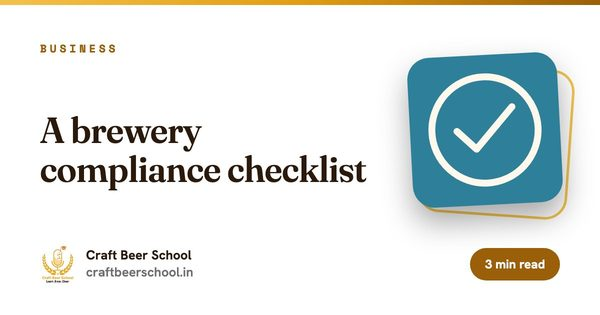

FormatOnline
Duration4 Weeks
Sessions8 live, 2 hours each
BatchMax 20
Fee₹9,999

Who it is for
Is this for you?
- Brewers thinking about adding spirits
- Founders planning a craft distillery or a gin brand
- Bartenders and spirits lovers who want to know how it is really made
By the end
What you walk away with.
- Explain every step from wash to bottle
- Read a still and explain how a distiller makes the cuts
- Design a gin botanical recipe on paper
- Understand the licences and costs behind a craft distillery in India
Your instructor and point of contact
Who teaches this course and who to ask.

Syllabus
Week by week.
4 weeks. Two live sessions every weekend and one assignment a week.
Week 01. Wash, spirits and the law
- How a wash differs from beer: no hops, with the fermentation pushed for alcohol
- Grain, molasses, fruit and sugar as starting points
- Distilling in India needs its own excise licence, separate from brewing. Rules vary by state. Distilling at home is not legal
- The main spirit families: whisky, gin, rum, vodka and fruit spirits
Assignment: Map the licences and approvals a craft distillery needs in your state.
Week 02. Stills and the run
- Pot stills, column stills and reflux
- Heads, hearts and tails: why the cuts matter for flavour and safety
- Proof, ABV and measuring a spirit
- Ethanol vapour, fire risk and safe still operation
Assignment: Read a sample run log and mark where you would make each cut and why.
Week 03. Gin and botanicals
- Juniper first: what makes a gin a gin
- Maceration versus vapour infusion
- Building a botanical bill, including Indian botanicals
- Dilution, proofing and bottling strength
Assignment: Design a gin botanical recipe and explain the role of each botanical.
Week 04. Ageing, costs and getting to market
- Oak, char and what a cask adds
- Why maturation runs faster in Indian heat and the higher losses to evaporation
- Costing a bottle: raw materials, energy, duty and packaging
- Brand, route to market and the first year of a small distillery
Assignment: Write a one-page business case for your first spirit.
How it runs
Format and terms.
- Schedule
- Live on Saturdays and Sundays, 12:00 PM to 2:00 PM IST. Timings may shift by mutual agreement with the cohort.
- Batch size
- Maximum 20 students, so every question gets answered.
- Included
- Session recordings, presentation decks, weekly assignments and the learning kit.
- Certificate
- Certificate of Completion once every assignment is in and you have attended at least 80% of live sessions.
- Beyond the screen
- Recommended microbrewery visits, so you see the kit you are studying.
- Fees
- Paid in full at sign-up. No discounts apply. A package of courses cannot be changed once confirmed.
Want the full flight? All 29 courses together run to 75 weeks. You choose your package when you enrol. Compare all 29 courses and read the refund policy before you pay.
Keep reading
Read before you start

Business
How to start a microbrewery in India
The brewhouse is the easy part. Licensing, cooling and working capital are what decide whether you open.

Brewing science
The phases of yeast growth
Yeast does not ferment at a constant rate. It grows, peaks, coasts and declines. Each phase leaves its mark on the finished beer.

Business
A brewery compliance checklist
No single office issues everything a brewery needs. Here is the full spread, grouped so you know who to call for what.
Recommended reading
Every guide for this course.
329 free guides on the topics this course covers. Read any of them before the first session.
Whisky 301
- Planning a craft distillery: the first decisions
- A bottling line for a craft distillery
- A career as a distillery QC chemist
- A career as a whisky warehouse manager
- A career in whisky marketing
- A career in whisky sales
- A distillery business plan from grain to glass
- A horizontal whisky tasting by region
- A vertical tasting of one distillery
- American and Canadian rye whisky compared
- Antifoam in whisky fermentation
- Australian whisky explained
- Bacteria in long whisky fermentations
- Barley contracts for malt whisky
- Batch records and traceability in a distillery
- Batch versus continuous distillation
- Becoming a distiller in India
- Becoming a whisky blender
- Becoming a whisky educator
- Beer cask finished whisky
- Blending malt and grain whiskies
- Budget lines for a craft whisky distillery
- Building a whisky brand without a distillery
- Building a whisky sales dashboard
- Buying used stills
- Buying whisky at duty free
- Campbeltown whisky explained
- Canadian whisky explained
- Caramel colour rules and practice
- Cask char levels
- Cask filling and gauging
- Cask filling strength and why 63.5 percent is common
- Cask finishing times and how to judge them
- Cask inspection before filling
- Cask leaks and repairs
- Cask ownership programmes
- Cask regauging and stock checks
- Cask strength whisky explained
- Choosing a site for a distillery in India
- Choosing a whisky as a gift
- Choosing casks for an Indian climate
- Clear versus cloudy wort in malt whisky
- Collaborations between breweries and distilleries
- Commissioning a new distillery
- Comparing whisky age statements side by side
- Contract distilling and sourced whisky
- Cooking maize and wheat for grain whisky
- Cooking with whisky
- Cooling water for condensers in a hot climate
- Cooperage basics for distillers
- Copper contact and spirit character
- Copper levels in spirit
- Corks, synthetic stoppers and screw caps for whisky
- Corn whisky mash bills
- Decanters and whether they suit whisky
- Demand sensing for the festive season in spirits
- Designing a whisky range of core and limited releases
- Direct fire versus steam heated stills
- Distillation logs and what to record
- Distillers yeast versus brewers yeast
- Distillery effluent treatment in India
- Distillery layout for good process flow
- Distillery visitor centres and tours
- Distillery water rights and borewell planning
- Distilling rye and taming the foam
- Double distillation explained
- Draff and spent grain for cattle feed
- Dunnage, racked and palletised warehouses
- Energy use in a whisky distillery
- English and Welsh whisky explained
- Enzymes for grain whisky mashing
- ESG reporting for whisky companies
- Esters in new make spirit
- Ethanol vapour and ignition sources in a distillery
- Ethyl carbamate in spirits
- Excise and state permits for spirits in India
- Export plans for an Indian single malt
- Fermentation length and its effect on new make
- Filtration choices before bottling whisky
- Floor malting and whisky
- Forecasting whisky with long lead times
- Foreshots, methanol and distillery safety
- Fruity whisky styles for beginners
- Funding whisky that cannot be sold for years
- Gas chromatography for whisky congeners
- Getting the most from a whisky festival
- Glass bottle supply for spirits
- Grain procurement for distilleries
- Grain whisky explained
- Grain whisky versus neutral spirit
- Handling pot ale and spent wash
- Handling whisky quality complaints
- Hazardous area zoning in a distillery
- Heads, hearts and tails in making the cut
- Highland whisky explained
- Hiring your first distiller
- How a Coffey still makes grain whisky
- How analysts segment whisky drinkers
- How Japanese whisky is made
- How MRP changes work for spirits in India
- How phylloxera helped Scotch whisky
- How the bulk whisky trade works
- How the Coffey still changed whisky
- How whisky ratings and scores work
- Humidity and strength change in the cask
- Hybrid stills for craft distilleries
- IBD distilling qualifications explained
- Infection in washbacks and how to spot it
- Insuring maturing whisky stock
- Islay whisky explained
- Keeping a whisky journal
- Legs and tears in a whisky glass
- Light and floral whisky styles
- Litres of alcohol per tonne as a distillery KPI
- Low wines and the spirit still charge
- Lowland whisky explained
- Lyne arm angle and spirit character
- Malt whisky from a brewery wash
- Malt whisky from Indian six-row and two-row barley
- Malting barley for whisky versus malting for beer
- Mash tun options for a small distillery
- Mashing for malt whisky and why the wort is never boiled
- Measuring alcohol strength with temperature correction
- Measuring and tracking cask losses
- Methanol limits and testing in spirits
- Millet whisky in India
- Milling grist for a distillery
- Mouthfeel in whisky from oily to thin
- Moving from bartending into whisky
- Naming a whisky brand
- New make strength and cut points
- New product development for whisky
- No age statement whisky explained
- Non-chill filtered whisky and haze
- Nosing whisky properly
- Oat whisky explained
- OEE on a spirits bottling line
- Oloroso, PX and fino casks in whisky
- Peat sources and peat smoke character
- Peated and unpeated runs in one distillery
- Peated Indian whisky explained
- Peated whisky with smoked food
- Planning a first whisky release
- Planning whisky flights for a dinner
- Pot still shape and reflux
- Predicted spirit yield on a distilling malt spec
- Primary and secondary sales in spirits
- Process water and reduction water in a distillery
- Re-racking whisky into new casks
- Reading a whisky back label
- Recycling feints in a malt distillery
- Rejuvenated casks
- Releasing a young spirit while the whisky waits
- Responsible whisky drinking and pacing
- Rice whisky explained
- Rich and sweet whisky styles
- Rum casks for whisky finishing
- Running a spirit still for a lighter or heavier spirit
- Sampling casks with a valinch
- Setting up a distillery quality control lab
- Sherry seasoned casks explained
- Shift life as a distillery operator
- Single malt rules and what they forbid
- Sizing stills for a craft distillery
- Small batch whisky blending at a craft distillery
- Smoky whisky for people who think they hate smoke
- Sour mash and backset
- Sourcing new make from another distillery
- Speyside whisky explained
- Spicy whisky styles and where the spice comes from
- Spirit receivers and measuring strength
- Spirit yield calculation in a malt distillery
- Spotting counterfeit whisky
- State labelling rules for spirits in India
- Steam boilers for a small distillery
- Still cleaning and caustic boils
- Still maintenance and copper wear
- Storing unopened whisky bottles upright
- Studying distilling and the qualifications that count
- Surrogate advertising rules for spirits in India
- Taiwanese whisky and hot climate maturation
- Tasting cask strength whisky without numbing your palate
- Tasting grain whisky
- Tasting Japanese whisky
- Tasting past the alcohol burn in whisky
- Tasting whisky blind
- Teaching a friend to taste whisky
- Temperature swings in Indian whisky warehouses
- The carbon footprint of a bottle of whisky
- The chemistry of whisky maturation
- The distillery licence process in India
- The history of Japanese whisky
- The history of Scotch whisky
- The history of whisky in India
- The whisky label compliance review
- The whisky sour explained
- Toasted versus charred casks
- Training a GCC team on spirits
- Triple distillation explained
- Using a whisky aroma wheel
- Using wine casks from Indian wineries
- Utilities for a distillery from water to power
- Vanillin and oak lactones in whisky
- Vatting and marrying whisky
- Virgin oak casks
- Water and energy in whisky sustainability
- Water hardness and haze when reducing whisky
- What a long finish means in whisky
- What makes a whisky Scotch
- What small batch means on a whisky label
- What the wash still and spirit still each do
- What to do when a whisky cork breaks
- What whisky colour does not tell you
- Whisky and cheese pairing
- Whisky and chocolate pairing
- Whisky and coffee pairing
- Whisky and seafood pairing
- Whisky and soda in India
- Whisky and the Indian festive calendar
- Whisky auctions and the secondary market
- Whisky clubs and tasting societies
- Whisky depletion data explained
- Whisky digital marketing within the rules
- Whisky export documentation
- Whisky for finance new joiners
- Whisky for HR and L&D teams
- Whisky for IT and data teams
- Whisky for legal and compliance teams
- Whisky for procurement teams
- Whisky for supply chain new joiners
- Whisky in a hip flask
- Whisky in Indian weather and serving temperature
- Whisky in the duty free channel
- Whisky inventory on the balance sheet
- Whisky master data done right
- Whisky miniatures and sample sets
- Whisky on the rocks and what ice does
- Whisky or whiskey and why the spelling differs
- Whisky packaging cost drivers
- Whisky portfolio tiers from regular to prestige
- Whisky price architecture
- Whisky reduction schedules in stages
- Whisky route to market in India
- Whisky sensory training for marketing teams
- Whisky stability testing before release
- Whisky stones and other chilling tricks
- Whisky trade marketing in bars and restaurants
- Whisky with a splash of coconut water and other Indian mixers
- Whisky with Indian sweets
- Whisky with mithai and festive food
- Whisky words for beginners, from dram to expression
- Whisky writing and journalism as a career
- Why most whisky is bottled at 40 percent
- Why Scotch must mature in oak and not other woods
- Why the same whisky costs differently across Indian states
- Why whisky wash sits near 8 percent ABV
- Wooden versus stainless steel washbacks
- Working as a cooper
- Working capital in a whisky business
- Worm tubs versus shell and tube condensers
- Writing standard operating procedures for a distillery
- Yeast nutrition in whisky fermentation
- Adding water to whisky: how much, when and why it changes the flavour
- Becoming a whisky brand ambassador in India: skills and first steps
- Cask finishing in whisky: what a finish adds and what it can hide
- Chill filtration and caramel colouring in whisky, explained plainly
- Designing a whisky label and bottle that reads as premium
- Designing a whisky warehouse for heat, humidity and evaporation losses
- Ex-bourbon, sherry and wine casks and how each one changes whisky
- Corn, rye, wheat and rice: how the grain shapes a whisky
- Hosting a whisky tasting evening at home for a group of friends
- Indian single malt whisky and what sets it apart from Scotch
- Using Indian six-row barley for malt whisky: what distillers face
- Peat and smoke in whisky
- Pot stills versus column stills and the whisky each one makes
- Reducing whisky to bottling strength: water quality, haze and timing
- Small casks for faster whisky ageing: do they really work
- Sourcing oak casks for a craft distillery in India
- Starting a whisky collection in India on a sensible budget
- Storing an opened whisky bottle: oxidation and how long it keeps
- Off-notes in whisky: sulphur, feints and how distillers trace them
- Bridge products: what a new distillery sells while its whisky matures
- What whisky competition medals mean and how to read them
- Whisky age statements explained
- Pairing whisky with Indian food, from kebabs to mithai
- Whisky glassware: tulip glass, tumbler or highball glass
- The whisky highball and why it suits a hot Indian summer
- Whisky wash fermentation: yeast choice, time and flavour
- Writing whisky tasting notes: a working vocabulary for beginners
- How whisky blenders keep a brand consistent
- Molasses spirit versus grain spirit in India
- Distillery KPIs: yield, litres of pure alcohol and losses
- Tasting whisky properly, for teams new to spirits
- Whisky label terms: age statements, single cask and cask strength
- The Indian whisky business for new joiners
- Whisky inventory: planning stock you cannot sell for years
- The angels' share: why whisky ages faster in India
- Whisky maturation: what the cask actually does
- Scotch, bourbon, Irish, Japanese and Indian whisky
- Malt, grain and blended whisky explained
- How whisky is made, from grain to cask
Drinks business 16
- Buying neutral spirit for gin: quality and contracts
- Contract-distilled gin: how it works and what to check
- What goes into a gin distillery business plan
- Gin distillery licensing: the steps most places share
- Writing a project report for a gin distillery
- Launching a spirits brand in India from abroad
- Planning production capacity for a gin brand
- Selling gin direct: online, events and the distillery shop
- Launching a gin brand in India without owning a distillery
- Making a spiced rum: building the recipe and the brand together
- Non-alcoholic spirits: how they are made and who buys them
- Rum styles explained, from light and dark to spiced and aged
- Excise basics for finance teams in beer, wine and spirits
- Water, energy and packaging across beer, wine and spirits
- Where data and AI help breweries, wineries and distilleries
- Beer, wine and whisky compared, for people joining the drinks business
Consultancy 6
- Contract manufacturing for drinks brands: beer, wine and spirits
- A feasibility study for a craft distillery
- Trial runs before a distillery launches its first spirit
- What distillery consultancy covers, from still to bottle
- Getting new make spirit right before it goes into cask
- Planning a craft distillery in India
Business 2
Brewing science 1
Save your seat in Craft Distilling.
Cohorts cap at 20. Enrol now or ask us on WhatsApp.